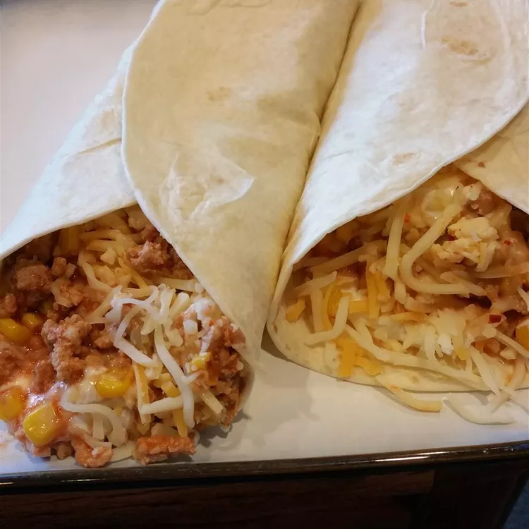

Steakhouse burritos
Easy to make, Gary's turkey burritos are special and low-fat and taste awesome! You don't eat red meat, but love burritos?
Well, you can't taste the difference here. These are medium spicy, not fire hot!

Ingredients
- 1 pound ground turkey
- 6 (10 inch) flour tortillas
- 1 (16 ounce) container fat-free sour cream
- ¾ cup shredded reduced-fat Cheddar cheese
- 2 (7.75 ounce) cans Mexican-style hot tomato sauce (such as El Pato)
- 1 (15.25 ounce) can whole kernel corn, drained
- ½ small onion, diced
- 1 (16 ounce) can fat-free refried beans
Directions
- Step 1: Brown ground turkey in a large skillet over medium-high heat. Stir in tomato sauce, corn, and onion. Reduce heat to medium; simmer, stirring occasionally, until liquids reduce, about 20 minutes.
- Step 2: Heat beans in a separate medium skillet over medium-low heat.
- Heat tortillas over a gas stovetop burner for 1 to 2 minutes, flipping a few times.
- Fill tortillas with beans, turkey mixture, sour cream, and cheese; serve while still warm.
Home